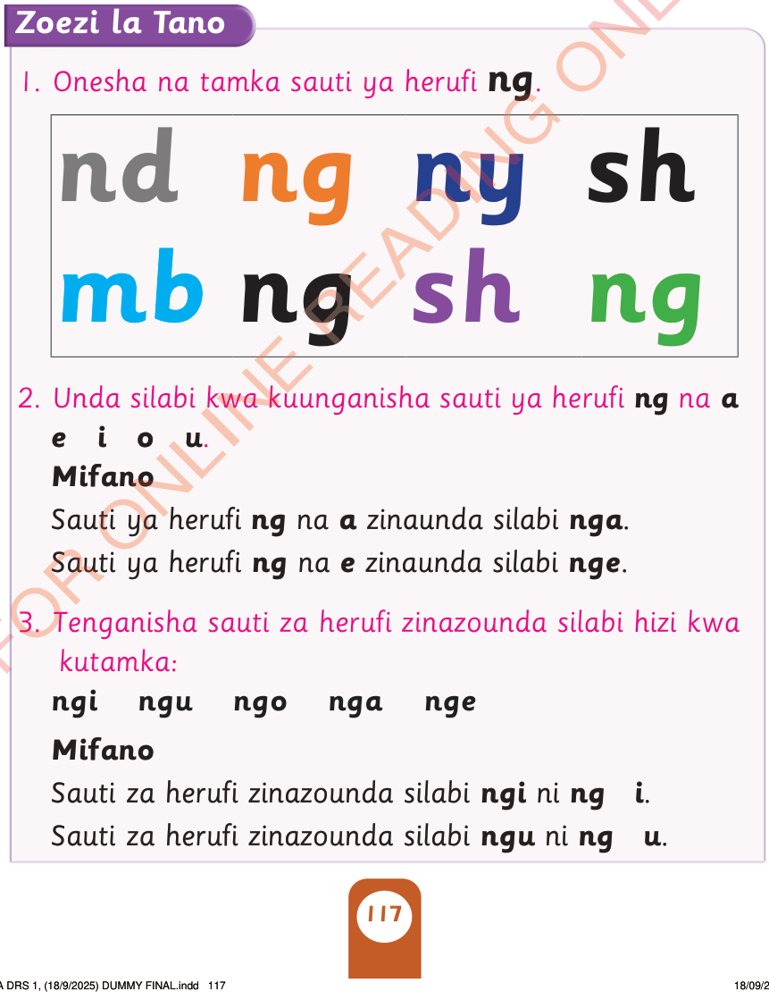

Tazama/ chunguza herufi hii:
Tamka sauti ya herufi hii/ bainisha kwa lugha ya alama herufi hii:
ng
Zoezi la Tano
1. Onesha na tamka sauti ya herufi ng/ onesha na bainisha kwa lugha ya alama herufi ng.

nd
ng
ny
sh
mb
ng
sh
ng
2. Unda silabi kwa kuunganisha herufi ng na a
e i o u.
Mifano
Herufi ng na a zinaunda silabi nga.
Herufi ng na e zinaunda silabi nge.
3. Tenganisha Herufi zinazounda silabi hizi kwa kutamka/ kutumia lugha ya alama:
ngi ngu ngo nga nge
Mifano
Herufi zinazounda silabi ngi ni ng i.
Herufi zinazounda silabi ngu ni ng u.